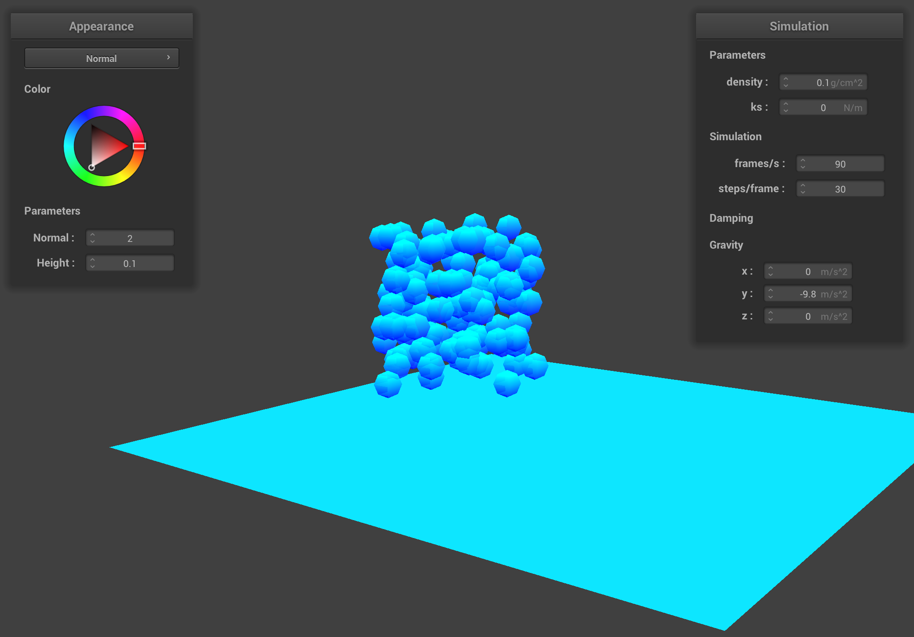
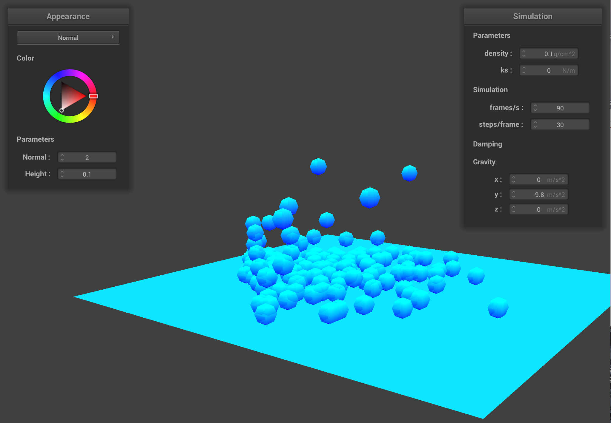
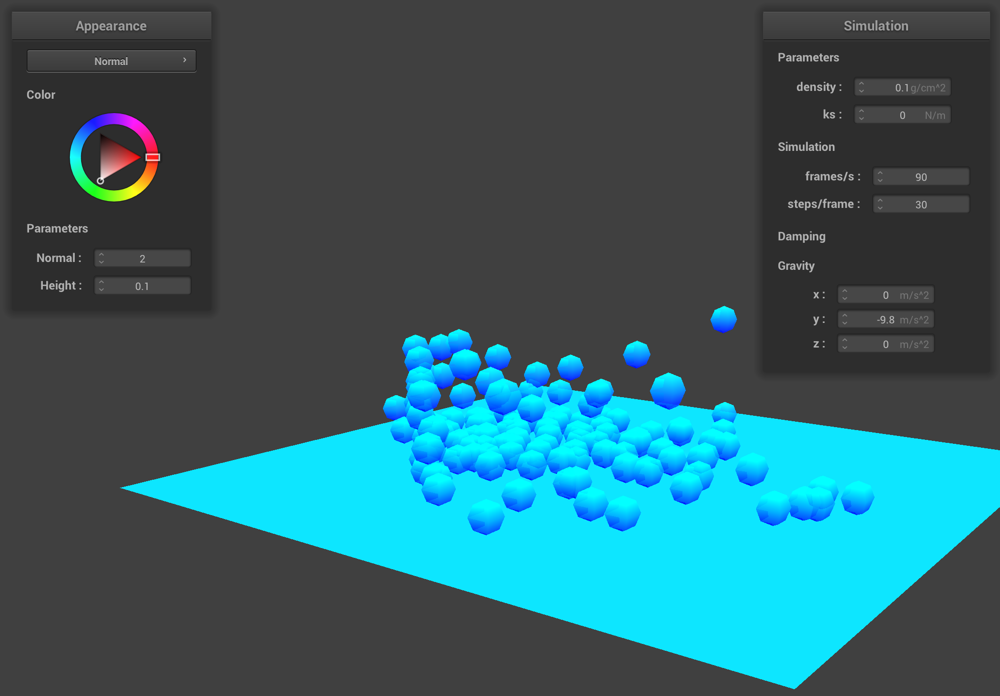
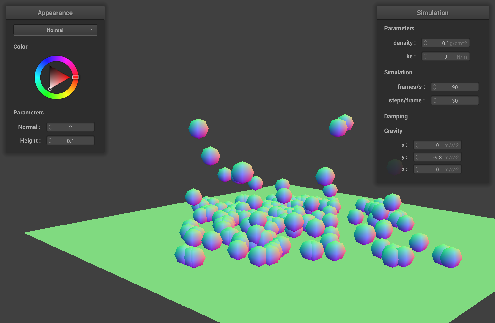
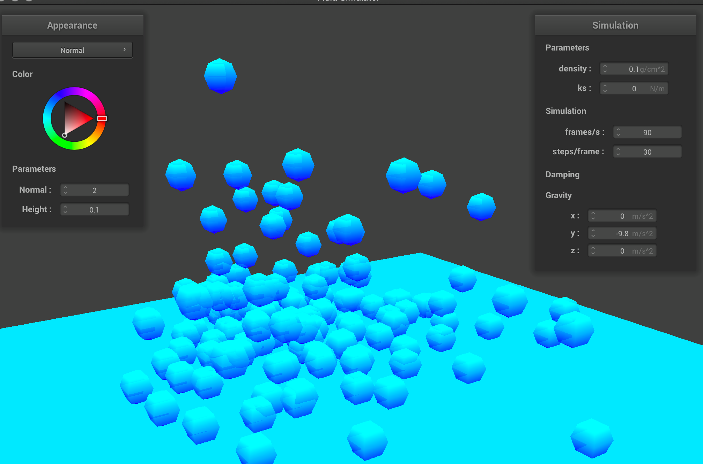

|  |  |  |
This project focuses on using a position-based fluids method to create a realistic simulation of water particles falling onto and interacting with a tank-like structure. To do so, we model particles to act as fluid particles and use knowledge of the physics of water to determine how the particles should move and react to hitting surfaces. Implementing the position-based fluids method allows the model to follow the tensile properties of a fluid, enforcing incompressibility constraints and maintaining constant density for the water particles— crucial contributions to the realism of the simulation.
Building off of the code from Project 4, we created a Water class to model water using a cube volume. We implemented the Water::buildVolume() method to create a cube of point masses, each representing a water particle, and calculate each particle’s mass. For the simulator application, we implemented WaterSimulator, which draws each of the point masses in the water cube to the screen using GL_POINTS with the shader. The particle rendering was later changed to render particles as spheres. We updated main accordingly to use the WaterSimulator as its application and be able to read and parse Water objects from files. For the Plane object, we modelled the particle collisions as inelastic collisions.
Below is our initial simulation result after making these changes.
Some updates to PointMass and the Water::simulate() method were also necessary in order to implement our water particle simulation. For PointMass, the velocity attribute had to be changed from a function solely based on position to a dynamic attribute. We also added a lambda variable as the scaling factor for Newton’s method (for solving incompressibility constraint) and methods to compute the SPH kernel and kernel gradient functions.
Using these updates, we were able to build the Water::simulate() method to follow the implementation from Macklin and Müller’s paper.
Next, we needed to improve the realism of the simulation by enabling the water particles to interact with each other following the tensile properties of a fluid. This would allow us to fully integrate Macklin and Müller’s simulation loop. To do so, we implemented an efficient algorithm for finding neighboring particles using spatial hashing. By finding each particle’s neighbors, we could calculate the tensile forces and enforce incompressibility constraints, and particles could then influence the motion of other particles within a certain neighborhood.
We also decided to adjust our simulation to have our water particles contained within a bounding box representing a “tank”, to further allow us to see how the particles followed fluid-like motion when colliding with walls. To build the bounding box, we added collision detection for 4 additional planes perpendicular to the bottom surface plane, all-together forming a cube structure. Since we wanted to maintain clear visibility of the particles, we chose not to render the planes making up the walls of the bounding box, and rather implemented them as invisible boundaries.
Finally, we adjusted the shader to render the spheres as only shades of blue as well as semi-transparent to improve the visual appearance of the simulation.
|

|

|
Although the method described in Macklin and Müller’s paper also included vorticity confinement and viscosity constrainment, we were unable to make these additions due to time limitations. However, these adjustments would have helped to replace lost energy and any undesirable damping that may have occurred due to the position-based methods, further aiding the realism of the simulation.
In addition, further optimization and parallelization would allow for a simulation with more particles, which would more closely model the fluid. If we had more time we would have also liked to do different types of rendering such as a refraction/glass shader or splatting rendering algorithm.